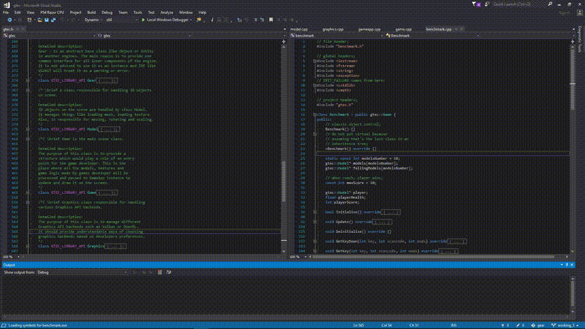
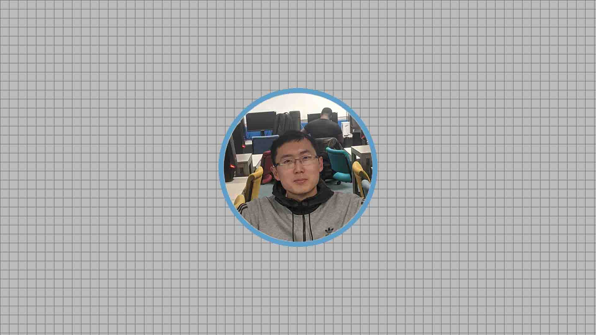

This is a racing game made for Brighton:Develop conference. My contribution was gameplay programming and
car levitation.
Gameplay programming included car interactions like lights, keyboard and gamepad controls.
Car levitation was implemented using PID controller. This is a self-correcting mechanism used in robotics.
This technique renders into a smooth simulation of a car levitation.
The game was build for PS4 using Unity and its PlayStation extension. The game has full support for Sixaxis.
With Unity HDRP we achieved better graphics. That was a good time to experiment with the new
Unity pipeline and it also resulted in better graphics. Although, not without optimisations due to the nature of PS4.
Apart from my programming duties, I also helped with game design and envinroment animations.
Vulkan C++ Game Engine: GTEC

A game engine written in C++ based on GLFW with Vulkan renderer. It's a bare minimum engine showing
the Vulkan render pipeline.
This was my final year project at univesity. The goal was to experiment with game engine development and
since I already new OpenGL, I decided to try new low-level API.
During the development of this project, I learned how to not design an engine architecture.
Also, I acquired an understaning and ideas of how to make them for future projects.
Hololens Unity AR Game: Target
This an AR game developed during my master's degree. I was experimenting with the Hololens headset.
It was a solo project based on Unity UWP and MRTK. The workflow for Hololens is still rough, but not much
different from, for example, PS4 or smartphones. Toolkits like MRTK greatly help in the development.
However, could be also the cause of troubles. For instance, I couldn't integrate Azure voice recognition
because MRTK were prioratising itself thus making microhpone unaccessable.
Although, this is not the only AR project I worked on, but that's the only one which has a good trailer.
Other AR projects I had were a team project where we were making a Vuforia object projection game and another one
a YOLO object recognition app using Unity Barracuda inference engine.
Vladislav Li

Hello, I am a graduate games programmer. Looking for new endeavours in games indusctry to further improve my skills in C/C++, C#, Python in technologies
like Unity, Unreal or custom in-house game engines.
I am looking forward to meet people interested in making scoped polished games to deliver entertaining experiences to the players.
I have worked on various interdisciplinary projects ranging from somewhat classical PC games to neural network based applications like
YOLO real-time object recognition using Hololens v1 headset.
My passion for programming began before I went to university at school. My first programming language was Turbo Pascal and later I studied
Delphi at my local university after lessons. At home, I was reading a book about C++ written by Arnold Willemer. Although, as a beginner
I didn't understand many programming concepts, I kept learning and went to Kingston University to study games programming.